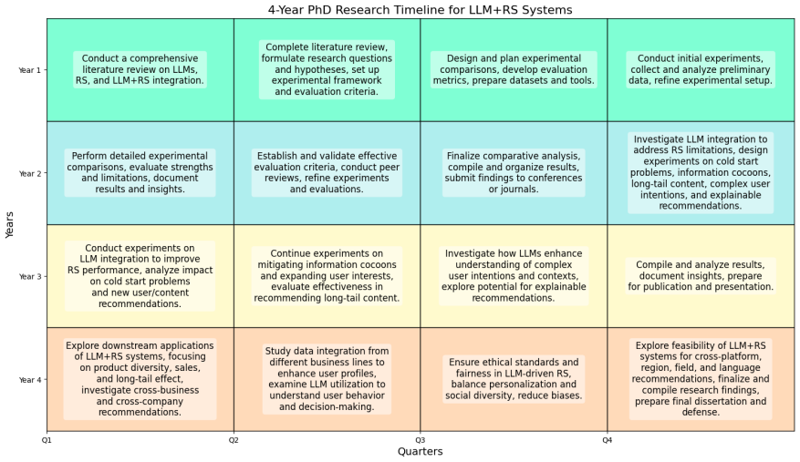

Introduction
The objective of my research is to develop a recommendation system (RS) driven by Large Language Models (LLMs) to provide more personalized and human-centric services across various downstream applications such as music recommendation, product recommendation, app recommendation, and movie recommendation. Conventional Recommendation Models (CRMs) face significant limitations, including a lack of open-domain world knowledge and insufficient explainability of recommendations.
The emergence of large foundation models, particularly LLMs, offers promising and universal insights for addressing challenging problems in the data mining field. These models demonstrate impressive general intelligence across various language processing tasks due to their extensive memory of open-world knowledge, logical and commonsense reasoning capabilities, and awareness of human society and culture. By leveraging natural language as a universal information carrier, LLMs can integrate, exploit, and interpret knowledge across different forms, modalities, domains, and platforms.[1]
My research interest aims to explore the incorporation of LLMs into recommender systems to overcome the inherent drawbacks of CRMs by utilizing LLMs' common knowledge and reasoning abilities. The goal is to enhance the performance and user experience of recommendation systems, making them more intelligent, explainable, and effective in understanding and catering to user needs across various application domains.
Literature Review
Recently, RS researchers and practitioners have made pioneering attempts to employ Large Language Models (LLMs) in current recommendation pipelines, achieving notable progress in enhancing the performance of various canonical recommendation processes such as feature modeling and ranking. Several survey works delve into the potential of LLMs for general recommender systems:
According to the research of previous scholars and the current state-of-the-art [1,5], there are three primary approaches for LLM-driven recommendation systems:
Approach 1: Sequential Integration of LLM and RS
This approach involves using LLMs to process upstream data before inputting it into the recommendation system for final ranking and decision-making. There are two main paradigms:
Approach 2: LLM as RS
In this approach, LLMs are used directly as recommendation systems. This method leverages the generative capabilities of LLMs by constructing detailed prompts and instructions, enabling the LLM to generate recommendations based on user and item information. E.g., Meta's "Actions Speak Louder than Words: Trillion-Parameter Sequential Transducers for Generative Recommendations" [8]
Approach 3: Fusion of LLM and RS
This approach addresses both the "WHERE" and "HOW" questions of integrating LLMs into RS:
HOW: Centers on how to adapt LLMs for RS, with two orthogonal taxonomy criteria:
Research Plan
1.Comparison of LLM+RS Research Paradigms
2.Exploring Solutions to Current RS Drawbacks with LLM Integration
Investigate whether the integration of LLMs can address the current limitations of recommendation systems, such as:
Downstream Applications of LLM+RS Systems
[1] https://arxiv.org/pdf/2306.05817
[2] Likang Wu, Zhi Zheng, Zhaopeng Qiu, Hao Wang, Hongchao Gu, Tingjia Shen, Chuan Qin, Chen Zhu, Hengshu Zhu, Qi Liu, et al. 2023. A Survey on Large Language Models for Recommendation. arXiv preprint arXiv:2305.19860 (2023).
[3] Wenqi Fan, Zihuai Zhao, Jiatong Li, Yunqing Liu, Xiaowei Mei, Yiqi Wang, Zhen Wen, Fei Wang, Xiangyu Zhao, Jiliang Tang, and Qing Li. 2023. Recommender Systems in the Era of Large Language Models (LLMs). arXiv:2307.02046 [cs.IR]
[4] Chengkai Huang, Tong Yu, Kaige Xie, Shuai Zhang, Lina Yao, and Julian McAuley. 2024. Foundation Models for Recommender Systems: A Survey and New Perspectives. arXiv preprint arXiv:2402.11143 (2024).
[5] https://arxiv.org/pdf/2305.19860
[6] https://arxiv.org/pdf/2403.01744
[7] https://arxiv.org/pdf/2306.02841
[8] https://arxiv.org/abs/2402.17152